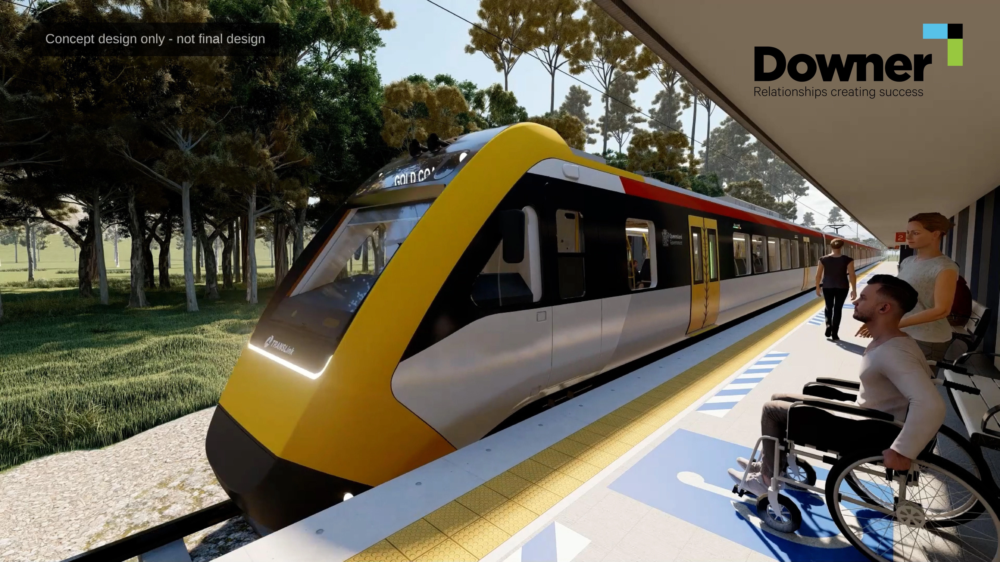
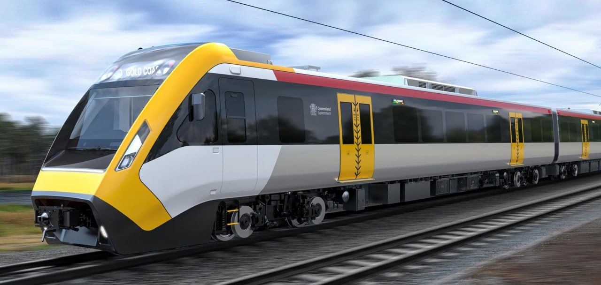

QTMP / NNGR (Queensland Train Manufacturing Program / New NGR)
The QTMP is a $9.5 billion program funded by the Queensland Government to design, build, and maintain 65 new trains for the SEQ network. The program also includes the construction of a purpose-built manufacturing faciltiy in the Fraser Coast region, as well as a new rail faciltiy in Ormeau for train maintenance and stabling.
After a bidding process involving Alstom, CAF, and Downer that started in June 2021, Downer was named the preferred applicant in Febuary 2023.
Timeline
- October 2020: Funding announced for a new fleet of trains.
- June 2021: Alstom, CAF and Downer announced as shortlisted applicants to deliver Queensland Train Manufacturing Program.
- October 2021: Torbanlea announced as the location of the train manufacturing facility.
- April 2022: Early works commenced for the manufacturing facility.
- Mid-2022: Shortlisted applicants submitted final proposals.
- October 2022: Ormeau announced as the location for the rail facility.
- February 2023: Announcement of Downer as the preferred applicant to deliver Queensland Train Manufacturing Program.
- June 2023: Downer awarded the contract to deliver the Queensland Train Manufacturing Program.
- Late 2023: Site construction works at the manufacturing and rail facilities started.
(Future dates: indicative only)
- Late 2025: Construction of the Torbanlea train manufacturing facility completed and train manufacturing begins.
- Late 2026: The first train is completed and begins testing.
- Late 2026: Ormeau rail facility construction completed.
- 2032: All trains expected to be in service.
Gallery

